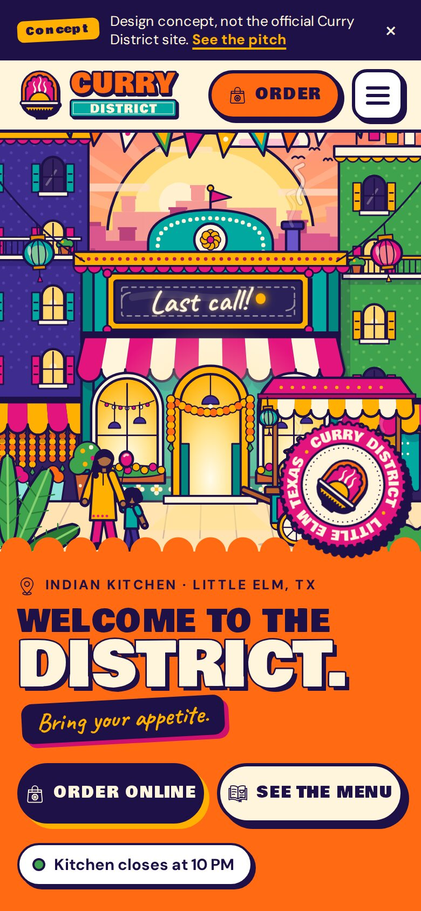
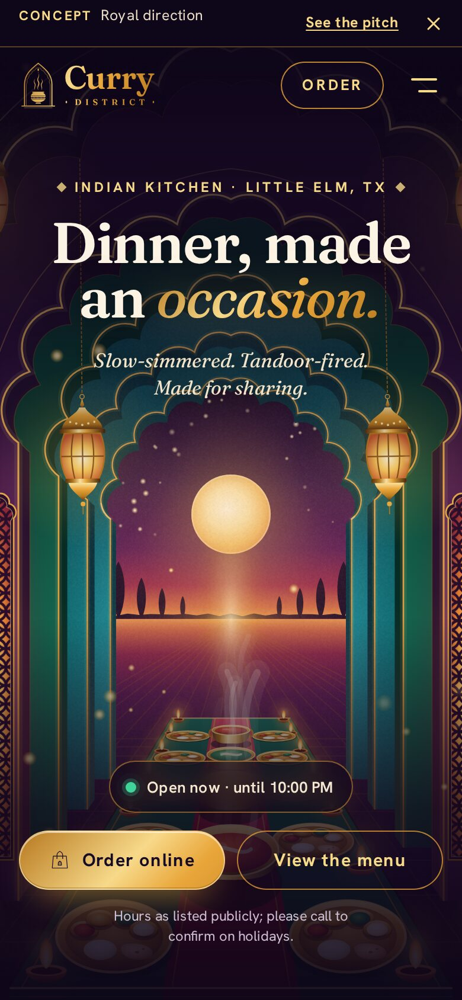

4.2
≈ 1,000 reviews
Count inferred from Restaurant Guru (1,021), which usually mirrors Google.
likelyWhat we found · Oct 2026
Thousands of guests have rated Curry District, and they rate it well. Online, the brand shows up in seven slightly different outfits. Here's what we found, kindly and honestly.
The gap, in two bars
Google, Uber Eats, Restaurantji, Yelp · as listed publicly
Loved. Biryani and pulav, butter chicken, garlic naan, and staff who make recommendations.
Under-sold. Three phone numbers, seven ordering links and three different blurbs.
Fixable. Ten quick wins. Most are tidy-ups, not rebuilds.
How we built this. We used public listings and search results only (4 Oct 2026). We couldn't open most pages directly, and we haven't seen your analytics, POS or Google dashboard. Anything marked likely or estimate is something we'll confirm with you.
01
Ratings as listed publicly, Oct 2026. The delivery apps hold your biggest crowd.
4.2
≈ 1,000 reviews
Count inferred from Restaurant Guru (1,021), which usually mirrors Google.
likelyUber Eats
4.5
2,000+ ratings
Your largest rating pool. DoorDash shows 4.5 too.
likelyRestaurantji
4.5
479 reviews
Count is on the listing title. The 4.5 comes from a search summary.
verified countYelp
4.0
120 reviews · 45 photos
Listing marked “Updated September 2026”.
verifiedAlso spotted: Facebook shows 4.8, but from only 14 ratings, so it's a small sample. Nextdoor lists a “Neighborhood Favorite” badge for 2023 and 2024, which we'd verify before using. Tripadvisor has a listing with no reviews yet.
02
Six things guests notice before they taste anything, scored 0–10, with where we'd aim after the glow-up.
Our estimates from public listings. We have not seen your analytics or watched your site load on a phone. Treat these scores as a conversation starter.
3/10→ 9
You've said it feels flat. We haven't seen it rendered, so this score comes from its structure (five static pages) and its copy.
estimate · low–medium confidence4/10→ 9
Ordering happens on a separate Clover site, and six other ordering links float around the web. We couldn't test it on a phone.
estimate · low confidence4/10→ 9
Yelp (45) and Restaurantji (52) photos are mostly taken by guests. We didn't find a professional shoot of the food.
estimate · low confidence3/10→ 9
Frisco or Little Elm, three blurbs, two emails, mixed categories, and no shared colours or voice. More on this below.
estimate · medium confidence3/10→ 8
Facebook has 1,164 followers and 14 ratings. We couldn't confirm the Instagram account or how often either one posts.
estimate · low–medium confidence6/10→ 9
Your strongest channel, with hours, phone, BYOB and parking all showing, plus about 1,000 reviews. We couldn't see its photos, posts or menu.
estimate · low confidence03
Every busy restaurant picks up loose ends across dozens of listings. Here are seven we can tidy up together.
To tidy up together: you pick the main line after a quick call to each, and we ask Grubhub and Allmenus to update theirs.
Your Facebook and Instagram handles and some site copy say Frisco. Every address says Little Elm. A similarly named restaurant nearby, Desi District, makes searches even easier to mix up.
To tidy up together: say “Little Elm (near Frisco)” everywhere, and keep the handles as they are.
To tidy up together: write one confident line in your own voice, and fix a couple of small typos while we're at it.
Guests have seven doors to choose from, and your reviews are split across them too.
To tidy up together: one big “Order” button (Clover) and one tidy row of delivery apps. Retire gotoeat.
Every page title reads just “Curry District”, with no city and no cuisine, so Google has less to match when someone searches Indian food near me.
To tidy up together: give each page its own title, like “Indian Restaurant Little Elm TX” plus the page or dish name.
A Tripadvisor listing exists but has no reviews yet, which usually means nobody has claimed it.
To tidy up together: claim it, add photos, and invite a few regulars to say hello.
The address appears as “FM-423, Suite #200”, “FM 423 #200” and plain “FM423”. Listings use two different email addresses. Some call you “Indian” and others “Indian / American / Asian”.
To tidy up together: one address (11851 FM 423, Suite 200), one email and one category everywhere.
04
These themes are paraphrased from 16 public review summaries. They're not direct quotes, and we never invent them.
These count summaries, not reviews, and several summaries may draw on the same sources.
Well-seasoned dishes, a real layering of spice, and properly cooked rice.
Consistently positive on taste, authenticity, portion and value.
Portions feel generous, and prices feel reasonable for the size.
Friendly, accommodating, and happy to suggest what to order.
Praised for matching the spice level guests ask for.
Guests mention a clean space with Indian music in the background.
paraphrased · not a quote
These came up only a handful of times, and each one has a design answer.
2 of 16 summaries
A couple of summaries say even “Mild” has a kick, while others praise how well the heat matches the order.
A clear visual heat scale on menus, bags and lids.
2 summaries each
“Basic” or “simple” decor came up twice. So did several TVs playing different channels at volume.
A feature wall and calmer sound. These are design ideas, not a renovation plan.
1 summary
One delivery order arrived without its rice. No leak or cold-food complaints surfaced.
Branded, sealed bags with a “rice included” checklist sticker to protect those 2,000+ ratings.
We couldn't see the 1–3 star reviews, so this list is short because of what we could see, not because there's nothing to learn. Your own review inbox will know more.
05
You're a few tenths of a star from the local leaders, and the room to stand out visually looks wide open.
Close on taste
You sit a few tenths below the top-rated neighbours. That gap is small.
Behind on volume
Kuppanna and Delhi6 show roughly 3–4× as many Google reviews. Getting more reviews is a habit we can build.
Broadest menu
From what we could see, most neighbours specialise. You serve curries, biryani and pulav, tandoor and Indo-Chinese under one roof.
No neighbourhood rival surfaced with a loud, ownable look. Only the fast-casual concept brands read as designed.
No search result mentioned branded bags, lids or stickers nearby. Every delivery could be a little billboard.
Nobody nearby is marketing named, branded feast trays, despite a big celebration culture.
Caveat: we couldn't open competitor websites or Instagram, so we haven't seen their visuals. These openings come from search text. They're worth a 20-minute scroll together before we lean on them.
06
Tick them off as you go. Your progress is saved on this device.
07
We haven't recreated your current site here. You know it best. Instead, here are the two directions it could grow into. Both are live, so open them on your phone.
Today
A working site that covers the basics: menu, catering, delivery and contact.
Food that guests rate 4 stars and up.

